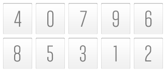
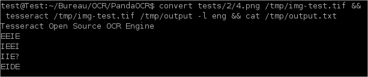
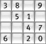
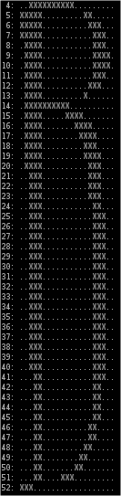
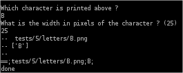
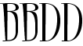

Pourquoi un OCR minimaliste ?
Pour des images minimalistes comme :
- Des claviers virtuels numériques ;
- Des CAPTCHA mal conçus.
 |  |
|  |  |
Exemples d'outils existants
|  |  |
 |
Comment ça marche ? (1/2)
L'OCR prend simplement une couleur (avec threshold ou marge d'erreur) et la taille d'une cellule.
Puis, il crée une matrice des pixels correspondants.
Ensuite, vous devez saisir le caractère que vous lisez.


Comment ça marche ? (2/2)
L'OCR apprend à partir de ce qui est saisi, pour qu'il ne soit pas nécessaire de saisir le même caractère deux fois.
 | |
Il traite les CAPTCHA simples
Les CAPTCHA sont un peu plus complexes car la largeur des caractères est variable.
J'ai donc ajouté une option qui permet à un utilisateur de spécifier la largeur de chaque caractère.

Avec les CAPTCHA (1/2)
Le différence avec les grilles réside dans la demande de la largeur de la lettre.
|  |  |
 |
Avec les CAPTCHA (2/2)
 | |
 | |
|  | |
 |
Le MAN